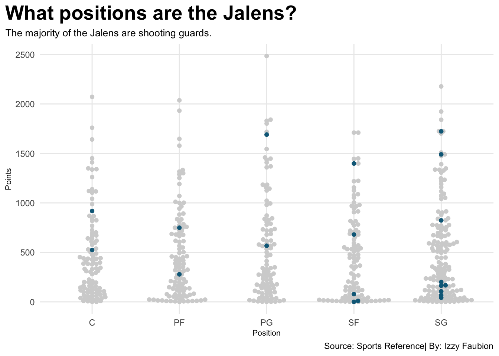
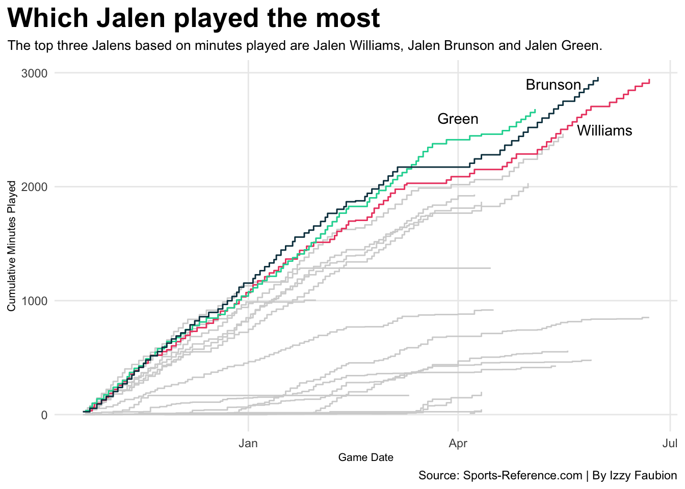
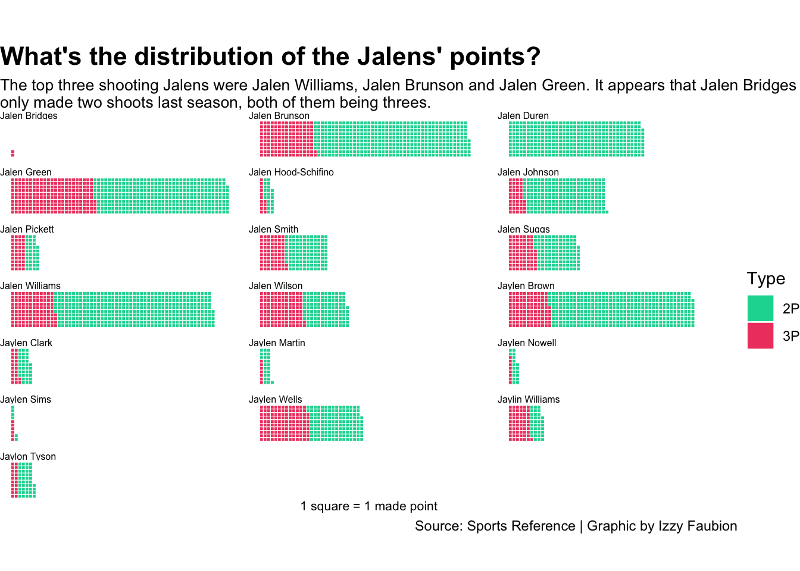

There is a joke between NBA fans that there are a lot of Jalens in the NBA. It is such a widespread phenomenon that there is a song on Tiktok about it, warning it is very catchy and you will spend the rest of the day singing it. The reason why there are so many players with that name is likely due to legend Jalen Rose. That brings us to the question of which Jalen, or any other spelling, is the best?
A note: For the purposes of this blog any spelling of the name Jalen will be grouped together into a collective name “The Jalens”, since it is easy to read and write instead of writing out all the spellings every time they are mentioned. When a player is mentioned by name their spelling will be spelled out.
Let’s start with how many Jalens are in the NBA?
Code
library(tidyverse)library(gt)lastseason<-read_csv("Jalen24-25.csv")Nametot<-lastseason |>separate(Player, into=c("First", "Last"), sep=" ") |>select(First, Last) |>group_by(First) |>summarise(total =n() ) |>rename(Name = First) |>rename(Total = total) |>arrange(desc(Total)) |>slice(1:10)Nametot |>gt()|>tab_header(title ="How many Jalens are in the NBA?",subtitle ="Jalen is the top name in the NBA with 14 players named Jalen, with another spelling coming in fifth." )|>tab_style(style =cell_text(color ="black", weight ="bold", align ="left"),locations =cells_title("title") ) |>tab_style(style =cell_text(color ="black", align ="left"),locations =cells_title("subtitle") ) |>tab_source_note(source_note =md("**By:** Izzy Faubion | **Source:** Sports Reference") ) |>tab_style(locations =cells_column_labels(columns =everything()),style =list(cell_borders(sides ="bottom", weight =px(3)),cell_text(weight ="bold", size=12) ) ) |>opt_row_striping() |>tab_style(style =list(cell_fill(color ="#073B4C"),cell_text(color ="white") ),locations =cells_body(rows = Name =="Jalen") ) |>tab_style(style =list(cell_fill(color ="#0C6988"),cell_text(color ="white") ),locations =cells_body(rows = Name =="Jaylen") )
How many Jalens are in the NBA?
Jalen is the top name in the NBA with 14 players named Jalen, with another spelling coming in fifth.
Name
Total
Jalen
12
Isaiah
9
Jordan
7
Josh
7
Jaylen
6
Kevin
6
Alex
5
Brandon
5
Cam
5
Aaron
4
By: Izzy Faubion | Source: Sports Reference
So as you can see the number one name in the NBA is Jalen at 12 players, with another spelling being fifth with 6 players. The other spellings of Jalen both have 1 player with that spelling, but don’t appear on the top ten graph.
With there being 20 players in the Jalen club, it raises another question. What are their positions?
Code
library(ggbeeswarm)library(ggrepel)names<-lastseason |>separate(Player, into=c("First", "Last"), sep=" ") set.seed(1234)Jalens<-names |>filter( First=="Jalen"| First=="Jaylen"| First=="Jaylon"| First=="Jaylin" )ggplot() +geom_beeswarm(data=lastseason |>filter(is.na(Pos) ==FALSE), aes(x=Pos, y=PTS), color="lightgrey") +geom_beeswarm(data=Jalens|>filter(is.na(Pos) ==FALSE), aes(x=Pos, y=PTS), color="#0C6988") +labs(x="Position", y="Points", title="What positions are the Jalens?", subtitle="The majority of the Jalens are shooting guards.", caption="Source: Sports Reference| By: Izzy Faubion" ) +theme_minimal() +theme(plot.title =element_text(size =20, face ="bold"),axis.title =element_text(size =8), plot.subtitle =element_text(size=10), panel.grid.minor =element_blank(),plot.title.position ="plot" )

The biggest number of Jalens are shooting guards. Jalen Rose was primarily a shooting guard in the NBA, so there might be a connection somewhere in there. The other largest group are small forwards, Rose’s other main position during his time playing.
One way to compare good players is to check how many minutes they play in games.
# A tibble: 33 × 7
# Groups: athlete_display_name [3]
athlete_display_name First Last game_date minutes minutes_num cum_min
<chr> <chr> <chr> <date> <dbl> <dbl> <dbl>
1 Jalen Green Jalen Green 2025-04-23 35 35 2527
2 Jalen Green Jalen Green 2025-04-26 39 39 2566
3 Jalen Green Jalen Green 2025-04-28 25 25 2591
4 Jalen Green Jalen Green 2025-04-30 28 28 2619
5 Jalen Brunson Jalen Brunson 2025-05-01 42 42 2520
6 Jalen Green Jalen Green 2025-05-02 32 32 2651
7 Jalen Green Jalen Green 2025-05-04 30 30 2681
8 Jalen Brunson Jalen Brunson 2025-05-05 44 44 2564
9 Jalen Brunson Jalen Brunson 2025-05-07 38 38 2602
10 Jalen Brunson Jalen Brunson 2025-05-10 40 40 2642
# ℹ 23 more rows
Code
Williams <- jalenlogs |>filter(athlete_display_name =="Jalen Williams")Green <- jalenlogs |>filter(athlete_display_name =="Jalen Green")Brunson <- jalenlogs |>filter(athlete_display_name =="Jalen Brunson")ggplot() +geom_step(data=jalenlogs, aes(x=game_date, y=cum_min, group=athlete_display_name), color="lightgrey") +geom_step(data=Williams, aes(x=game_date, y=cum_min, group=athlete_display_name), color="#EF476F") +geom_step(data=Green, aes(x=game_date, y=cum_min, group=athlete_display_name), color="#06D6A0") +geom_step(data=Brunson, aes(x=game_date, y=cum_min, group=athlete_display_name), color="#073B4C") +annotate("text", x=(as.Date("2025-06-03")), y=2500, label="Williams") +annotate("text", x=(as.Date("2025-04-01")), y=2600, label="Green") +annotate("text", x=(as.Date("2025-05-12")), y=2900, label="Brunson") +labs(x="Game Date", y="Cumulative Minutes Played", title="Which Jalen played the most", subtitle="The top three Jalens based on minutes played are Jalen Williams, Jalen Brunson and Jalen Green.",caption="Source: Hoopr | By Izzy Faubion" ) +theme_minimal() +theme(plot.title =element_text(size =20, face ="bold"),axis.title =element_text(size =8), plot.subtitle =element_text(size=10), panel.grid.minor =element_blank(),plot.title.position ="plot" )

The three Jalens that played the most minutes last season were Jalen Williams, Jalen Brunson and Jalen Green. An interesting observation is that Williams missed games due to injuries, but he still was first in minutes played.
Since most of the Jalens are shooting players, we should compare what they shoot.
Code
team_rows <-10jalenwaffle<-lastseason |>separate(Player, into=c("First", "Last"), sep=" ", remove =FALSE) |>filter( First=="Jalen"| First=="Jaylen"| First=="Jaylon"| First=="Jaylin" ) |>select(Player, `3P`, `2P`) |>pivot_longer(cols=-Player, names_to ="category", values_to ="count") |>uncount(count) |>group_by(Player) |>mutate(x = (row_number() -1) %/% team_rows +1,y = (row_number() -1) %% team_rows +1 ) |>ungroup()ggplot() +geom_tile(data=jalenwaffle, aes(x = x, y = y, fill = category ), color ="white") +facet_wrap(~Player, ncol =3)+coord_equal() +scale_fill_manual(values =c("#06D6A0", "#EF476F")) +theme_void()+labs(x ="1 square = 1 made point",title="What's the distribution of the Jalens' points?", subtitle="The top three shooting Jalens were Jalen Williams, Jalen Brunson and Jalen Green. It appears that Jalen Bridges \nonly made two shoots last season, both of them being threes.",caption="Source: Sports Reference | Graphic by Izzy Faubion", fill ="Type")+theme(plot.title =element_text(size =16, face ="bold"),plot.subtitle =element_text(size =10),axis.title =element_text(size =8),axis.title.y =element_blank(),strip.text.x =element_text(size =6, hjust=0) )

Once again Williams, Brunson, and Green are at the top of the shooters. Jalen Duren didn’t make any three-pointers during the season. Jalen Bridges only made two baskets during his eight games, this is likely why he was waived in during the summer league and is currently in the G league.
So where does all this information lead us? It appears that the top three Jalens of last season were Jalen Williams, Jalen Brunson and Jalen Green; with Williams being the best. What impact does this make on the world? Little to none. This information won’t change the world, but it is interesting that there are just so many Jalens in the NBA.